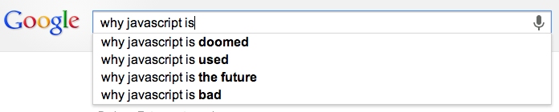
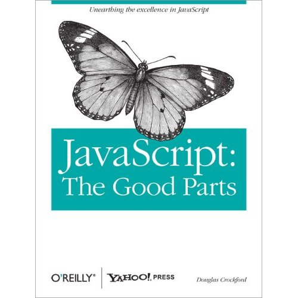

Your browser doesn't support the features required by impress.js, so you are presented with a simplified version of this presentation.
For the best experience please use the latest Chrome, Safari or Firefox browser.
Something realtime, something cool!
...and by doing so, learn Node.js
I like JavaScript


Node.js is an open source platform to run asynchronous JavaScript programs
Easy to use and very much qualified to handle huge amounts of events
Not so good at heavy computational things
Let's see how it works
node helloworld.js> Hello OpenTechSchool!It doesn't run on a webserver, you'll have to write your own (which is fun)
Node comes with it's own package manager
npm installnpm search twitternpm uninstall node-staticThere is only one process running to do everything
You know what will be done, you don't know when
thisTakesALongTime(function() {
// executed once finished
});Avoid nesting callbacks to deep :-)
var http = require('http');
var twitter = require('ntwitter');
We'll use ntwitter module for this, and define depencencies in package.json
{
"name": "twitter",
"dependencies": {
"ntwitter": "0.5.x"
}
}
npm installInstall node.js from nodejs.org
Introduction, lab and code:
http://xvr.in/eBb
which is:
https://github.com/nielsdoorn/nodejsworkshop/tree/master/tutorial
Or clone it with git:
git clone git@github.com:nielsdoorn/nodejsworkshop.git